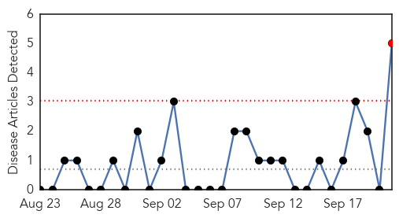
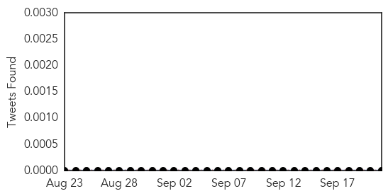
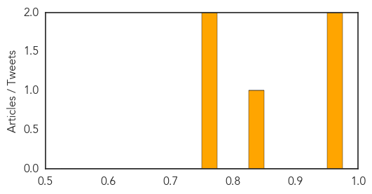
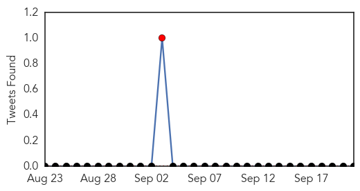

Mold/Fungal
30-Day Web Trend
1 alerts, 0 warnings

30-Day Twitter Trend
0 alerts, 0 warnings

Article Locations
Article Confidences
Top Articles:
Top Tweets:
-
No tweets found for Sep 21, 2015
Hepatitis
30-Day Web Trend
0 alerts, 0 warnings

30-Day Twitter Trend
1 alerts, 0 warnings

Article Locations
Article Confidences

Top Articles:
- 0.766
- Upstate Restaurant Employee Tests Postive for Hepatitis A
- 0.668
- South Sudan: MSF and UNICEF provide treatment to 16,000 children in mass malaria campaign in Bentiu PoC
- 0.587
- Pfizer Announces Positive Top-Line Results from Two Phase 3 Trials of Oral Tofacitinib in Adults with Moderate-to-Severe Ulcerative Colitis
- 0.567
- Bodies launch Awareness drive at Mandi Ahmedgarh
Top Tweets:
-
No tweets found for Sep 21, 2015